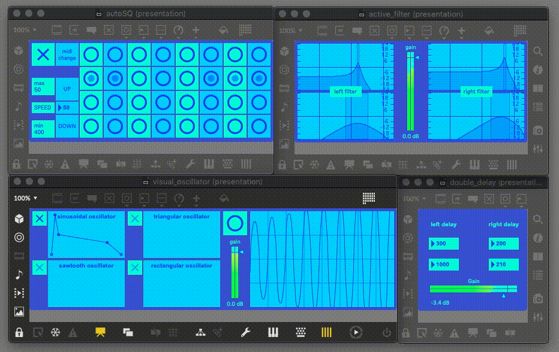
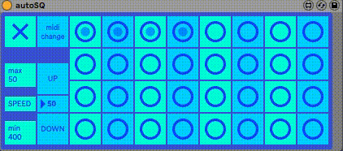
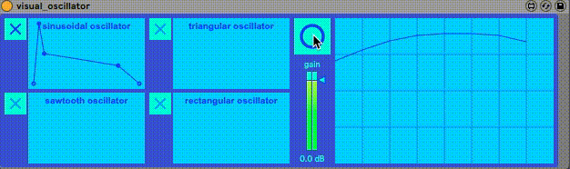
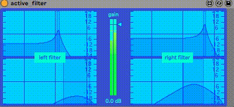
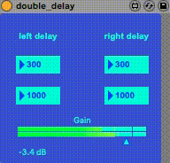

sq : ランダムで左右の流れ方が変化
1列目：ランダムに生成したノートパターン
2列目：1列目より1オクターブ高いノートパターン
3列目：階段状に上がるノートパターン
4列目：1列目とは異なるランダムのノートパターン
toggleボタン：sqのオンオフ
1度再生した後はtoggleをオフにした時のパターンがループされます
Midichange：16小節に1度、自動でsq内のノートパターンを変更（手動変更も可）
UP, DOWN：sqのspeedの変更

左側：波形を選びADSRを変更可能
ADSRはtoggleのオンオフの度にリセット
右側：波形を表示しており、bungを押すと4パターンの表示変更が可能

lowpathfilter：上側の2つのfilterでresonanceをきかせている
resonancefilter：下側の2つのfilterでreduxのような効果を出している
左側が左側の音声、右側が右側の音声にfilterをかけており、左右で若干動きが異なる

左右で別々にdelayが効いている
それぞれ3パターンのdelayの組み合わせがあり、それぞれが異なる効果を生み出す